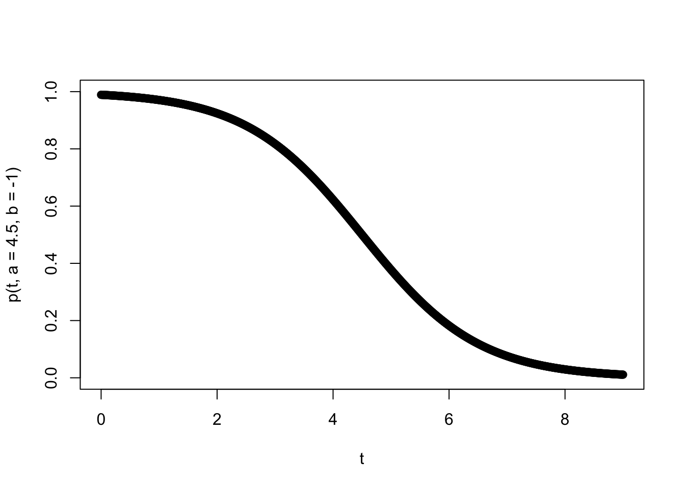
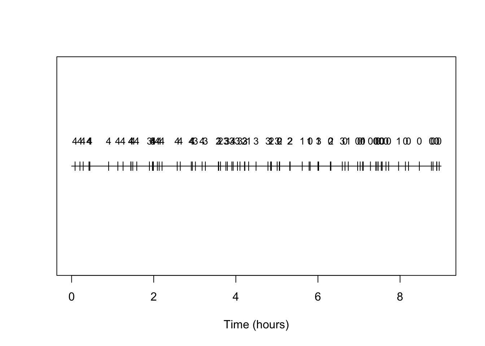
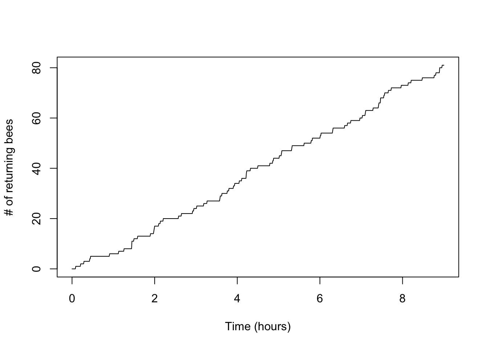
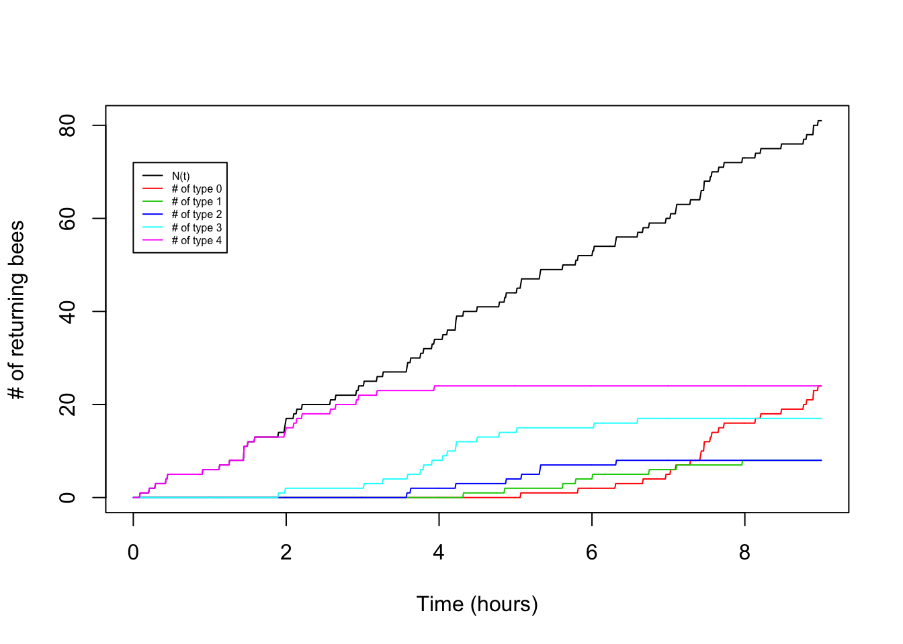
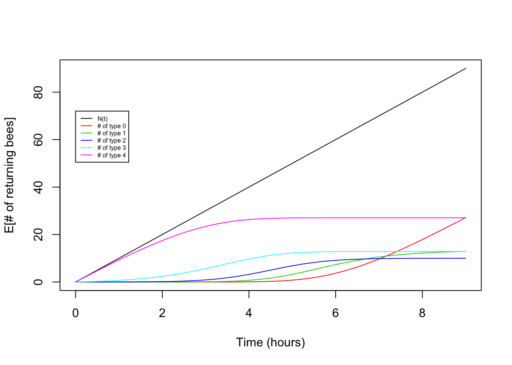
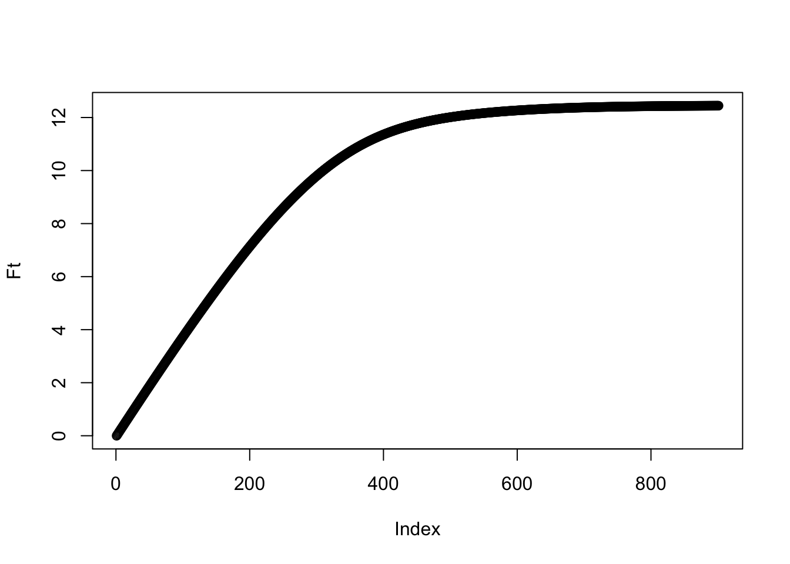

Last updated: 2016-02-02
Code version: 313901bf3e44e2e3e6aad9d020807ef3952c196e
This vignette assumes a basic knowledge of Poisson Processes.
An important extension to the basic Poisson Process with rate \(\lambda\) is to consider that each arrival may be categorized according to a certain type. If we let \(K\) be the total number of types, we might build a model in which the types are determined probabilistically according to a set of type probabilities (\(p_1,\ldots,p_K\),\(\sum_{i=1}^K p_i = 1\)). In this case, the arrivals of type \(i\) form a thinned Poisson Process that has a rate parameter of \(\lambda p_i\). Here, we are going to address the more difficult case in which the type probabilities vary through time.
Let \(P_i(s)\) reflect the probability of an arrival being type \(i\) given it arrives at time \(s\). A result from Poisson Process theory is that the number of arrivals of type \(i\) by time \(t\) (\(N_i(t)\)) will be Poisson with rate \[N(t) \sim Pois(\lambda \int_0^t P_i(t)).\] Our first goal here is to demonstrate this results holds true in some simulations.
An algorithm for simulating a Poisson Process with time-dependent type probabilities can be fairly simple: 1. Simulate the number of arrivals \(N\) via a \(Pois(\lambda t)\) 2. Conditional on \(N\), simluate the arrival times as independent uniform draws from \((0,t]\). 3. For each arrival, simulate it’s type from the discrete probability distribution specified by \({P_i(t),i=1,\ldots,K}\). Let’s try this in practice.
To use a concrete example, suppose that we are monitoring the success of foragers, who have a maximum capacity of gathering \(K\) food items. The number collected by each forager determines their type (so a forager who brings 3 items is type 3). Let’s further suppose the number of food items they gather is binomially distributed with a probability that is time dependent according to a function \(p(t)\). Further suppose we expect food to be harder and harder to gather - such that \(p(t)\) is a logistic decay function \(\frac{1}{1+e^{-b(t-a)}}\) where \(b<0\). The parameters \(a\) and \(b\) determine the inflection point and rate of change of the success probabilty through time. To add some interpretability to the parameters, let’s suppose we are thinking of bees in a hive and that our time scale of interest is a single day of foraging (say 9 hours over which they are returning to the hive), that the inflection point is midday (so \(a=4.5\) hours) and the rate at which the flowers are being depleted has a logistic decay rate such that \(b=-1\). Let’s plot this success probability curve.
t<-seq(0,9,by=0.01)
p<-function(t,a=4.5,b=-1){return(1/(1+exp(-b*(t-a))))}
# Plot for a=50, b=0.1
plot(t,p(t,a=4.5,b=-1),ylim=c(0,1))
Very cool. Let’s further suppose the rate at which foraging bees return is 10 per hour and they can bring a maximum of 4 pollen granules back. So our Poisson Process result will help us derive the number of bees of each type for different \(t\). Going into this, we can expect that given \(b<0\) the beginning of the process will contain more type \(4\) individuals, than later in the process it will decrease.
All the above is simply to say we have \(P_i(t) = P(X=k)\) where \(X \sim Binom(n,p(t))\) and \(p(t)=\frac{1}{1+e^{-b(t-a)}}\) with \(\lambda=10, K=4, t=9, a=4.5, b=-1\). So we can now write out our full simulation code:
# Initialize parameters
lambda<-10
K<- 4
b<- -1
a<- 4.5
t<- 9
# Declare p(t)
p<-function(t,a=50,b=-0.1){return(1/(1+exp(-b*(t-a))))}
# Declare function that assigns a random type
assign_type<-function(t,K,a,b){
return(rbinom(1,K,p(t,a,b)))
}
# Begin one replicate of simulation
## Draw total number of arrivals
N<-rpois(1,lambda*t)
## Draw the arrival times
arrival_times<-runif(N,min=0,max=t)
## Assign types to the arrivals
types<-numeric()
for(i in seq(1,N)){
types[i]<-assign_type(arrival_times[i],K,a,b)
}We can make a simple plot of the arrivals, annotating them each by type:
## And let's make a plot
plot(c(0,t),c(0,0),type='l');
text(arrival_times,rep(0,N),types) And indeed we see the prevalence of types is changing and with the higher number types becoming rarer as time progresses.
Another plot is the standard counting process plot
x<-seq(0,t,by=0.01)
n_t<-sapply(x,function(s) sum(arrival_times<s))
plot(x,n_t,type='l')
Now let’s try making a plot that adds in the arrivals of each type:
x<-seq(0,t,by=0.01)
n_t<-sapply(x,function(s) sum(arrival_times<s))
plot(x,n_t,type='l',xlab="Time (hours)",ylab="Number of returning bees")
for(i in seq(0,K)){
n_i<-sapply(x,function(s) sum(arrival_times[types==i]<s))
points(x,n_i,type="l",col=(i+2))
}
legend(0,0.8*t*lambda,legend=c("N(t)","N_0(t)","N_1(t)","N_2(t)","N_3(t)","N_4(t)"),lty=1,col=c(1,2,3,4,5,6),cex=0.5) So cool! We can see the type 4 arrival bees drop off and the type 0 arrivals increase as the hours pass.
What is cooler is that we have theoretical expectations for these patterns. So our simluations should follow some underlying mean values that we can predict given the parameters.
For the total number we have a simple Poisson Process, so \[E[N(t)]=\lamdbda t.\] Now let’s consider the type \(i\) events. From our Poisson Process results we have:
\[E[N_i(t)]=\lambda \int_0^t P_i(s)ds\]. but what is this exactly for your example?
Let’s substitute in the binomial probability mass function with our time varying \(p\).
\[E[N_i(t)]=\lambda \int_0^t \frac{n!}{(n-i)!i!} (\frac{1}{1+e^{-b(s-a)}})^i(1-\frac{1}{1+e^{-b(s-a)}})^{n-i}ds\] Nasty! Makes us wish those bees had a simple linear or exponential decay to their foraging success, because then we’d have some hope of integrating this mess analytically. As it is, we need to numerically integrate. To evaluate this for a single \(t\) we could use a single call to the integrate function, but we’re interested in plotting the mean values over a range of \(t\), so let’s build our own approximate numerical integrator that can store the partial integrals for all the values of t we want.
# Code for numerical intergration
dx=0.01
x<-seq(0,9,by=dx)
int_pt=matrix(nrow=5,ncol=length(x))
for(i in seq(0,K)){
int_pt[i+1,1]<-0
for(l in seq(2,length(x))){
log_pr<-i*log(1/(1+exp(-b*(x[l]-a))))+(K-i)*log(1-(1/(1+exp(-b*(x[l]-a)))))
int_pt[i+1,l]<-int_pt[i+1,l-1]+exp(log_pr)*dx
}
}
# Plots
plot(x,lambda*x,type="l")
for(i in seq(0,K)){
points(x,lambda*choose(K,i)*int_pt[i+1,],type="l",col=(i+2))
}
legend(0,0.8*t*lambda,legend=c("N(t)","N_0(t)","N_1(t)","N_2(t)","N_3(t)","N_4(t)"),lty=1,col=c(1,2,3,4,5,6),cex=0.5)
Victory! Our theory matches the observed pattern fairly nicely.
So what is the total amount of pollen in the hive? We’d guess the amount might plateau through time. To calculate the amount, call it \(Ftot\), we should have \[F(t)=\sum_{i=1}^K iN_i(t)\]. Let’s just look at this based on the results of our expectation:
Ftot<-rep(0,length(x))
for(i in seq(0,K)){
Ftot<-Ftot+i*int_pt[i+1,]
}
plot(Ftot) And indeed we see a plateau. When does it suggest the bees should stop bothering with collecting?
Are the \(N_i(t)\) indepedent of one another?
Consider a systems we are interested in the numbers of two types of arrivals at time \(t\): \(N_1(t)\) and \(N_2(t)\). Let the probability an arrival at time \(s\) being of type \(1\) at time \(t\) be determined by a cumulative distribution function \(G(t-s)\) and type 2 as \(1-G(t-s)\). This is an interesting case because we can use it to model the situation where after the arrival, each arrival waits a random time with distribution \(G\) before transitioning into state 2. In this case \(P_1(t)=\int_0^t G(t-s)ds\) and \(P_2(t)=\int_0^t (1-G(t-s))ds\). For the case where \(G(t-s)=e^{-\lambda(t-s)}\), work out a simulation and check against the theory as we did above.
A further challenge: Consider each arrival is of type 0 and that the probabiity an item is of type \(i\) at time \(t\) is determined by a continous time Markov transition probability matrix \(P_{0i}(t-s)\). For a simple transition matrix of your choice, work out a simulation and check against the theory.
sessionInfo()R version 3.2.0 (2015-04-16)
Platform: x86_64-apple-darwin13.4.0 (64-bit)
Running under: OS X 10.11.2 (unknown)
locale:
[1] en_US.UTF-8/en_US.UTF-8/en_US.UTF-8/C/en_US.UTF-8/en_US.UTF-8
attached base packages:
[1] stats graphics grDevices utils datasets methods base
other attached packages:
[1] expm_0.999-0 Matrix_1.2-1 knitr_1.10.5
loaded via a namespace (and not attached):
[1] magrittr_1.5 formatR_1.2 tools_3.2.0 htmltools_0.2.6
[5] yaml_2.1.13 stringi_0.4-1 rmarkdown_0.7 grid_3.2.0
[9] stringr_1.0.0 digest_0.6.8 lattice_0.20-31 evaluate_0.7